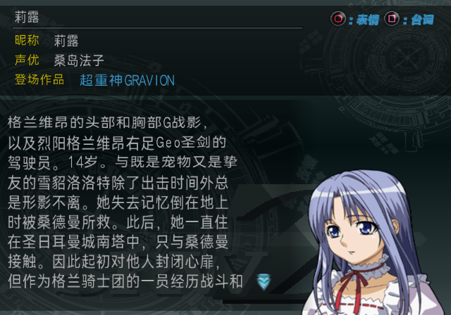
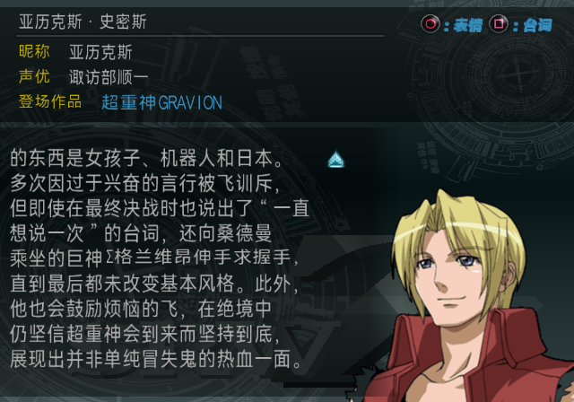
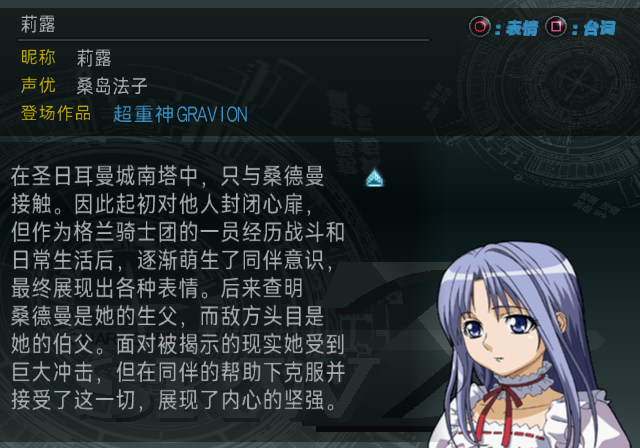
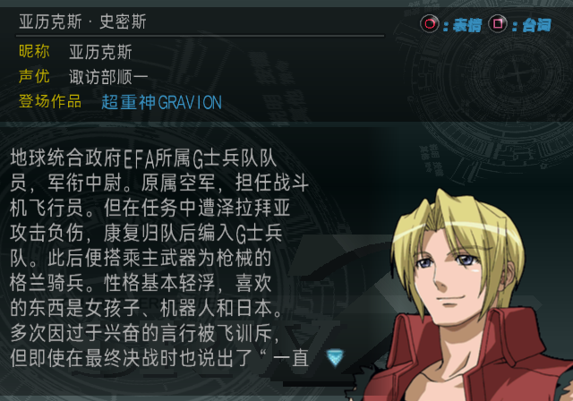
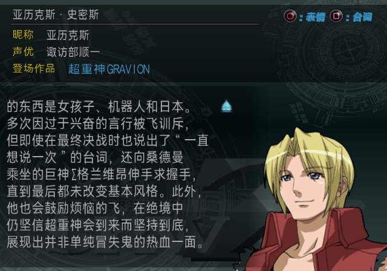
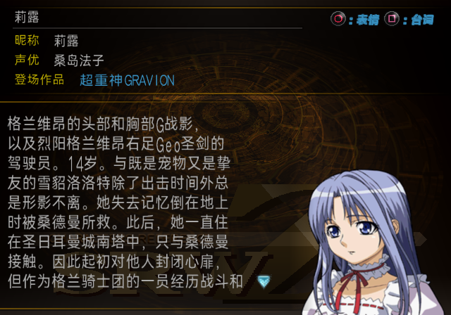
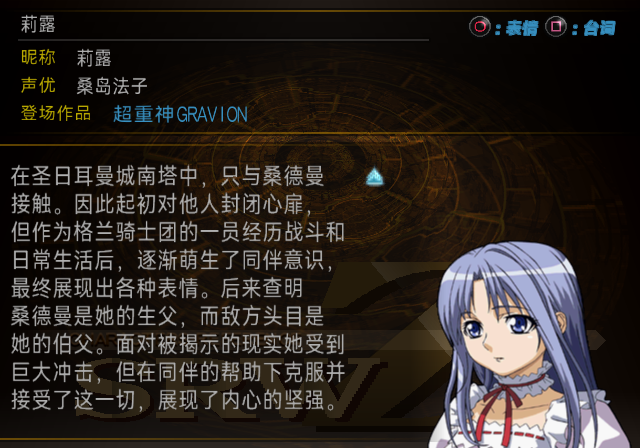
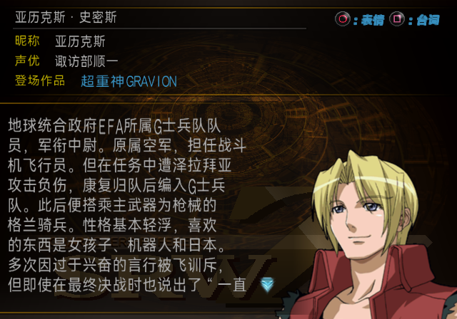
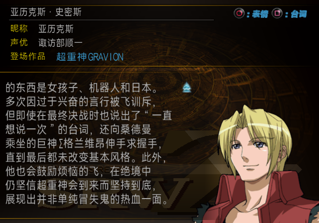

图鉴字体修复 · LRPS2 对照
原始核心截图，无文字重绘。正文中文恢复 21×12；英文紧缩段字高 14、纯数字段 13，段尾恢复中文字高 12。只在角色／机体正文使用英数补偿。
Original / Best 的 DSC2 是隔离 EE 状态的受控后期说明选择（80→81，截图后恢复）；SP 为标题图鉴自然显示。详情与 ISO 绑定见各版本 receipt.json。
before · 修复前受控 DSC2
莉露 · 首屏
莉露 · 滚动后
亚历克斯 · 首屏
亚历克斯 · 滚动后
original · 修复后
ISO SHA-256: 618ae8c7c1ce18627fd4f52e0d0f238955ae82f2c74d37609f1d29cc12ca1694
莉露 · 首屏 莉露 · 滚动后
莉露 · 滚动后
亚历克斯 · 首屏
亚历克斯 · 滚动后
best · 修复后
ISO SHA-256: 00cd01f7603f2a25fcfe18760a028115321fc3e2fa61f7bcdd0593c54688ed25
莉露 · 首屏
莉露 · 滚动后 亚历克斯 · 首屏
亚历克斯 · 首屏 亚历克斯 · 滚动后
亚历克斯 · 滚动后
sp · 修复后
ISO SHA-256: f224e2dd51c0c098ce4dcb0cccac87983ceccab0705632d61c1694ef650be787
莉露 · 首屏
莉露 · 滚动后
亚历克斯 · 首屏
亚历克斯 · 滚动后